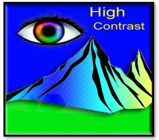
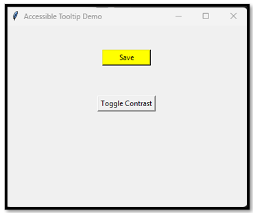

~5 Accessibility~
12/22/2025

“In the land of interfaces, clarity is the highest peak—and contrast is the light that guides us there.”
What is Accessibility?
Accessibility in programming is the practice of building applications or even websites, in a way that allows people with disabilities to use them. This involves (but is not limited to) providing text alternatives for images and widgets. You could also think about using colors with high contrast to help people even farther with other types of vision impediments.
How to implement High Contrast Accessibility
For a tooltip, you really do not need the type of access that you would need for an image. An image needs text to explain itself, but a tool tip is basically a text container; however a really nice helper would be to supply a tooltip with high contrast. Here we have code that changes the background color to a bright yellow. This would help people with vision disabilities.
Here you can see the code, in which you can you to create code to turn the background of a dull grey button into a button with a bright background. Then we used a toggle button, so it can be switched on or off.

This is only the high contrast section of the code.
# Optional: Toggle high contrast mode
def toggle_contrast():
current_bg = save_button.cget("bg")
if current_bg == "lightgray":
save_button.configure(bg="yellow", fg="black")
else:
save_button.configure(bg="lightgray", fg="black")
# Contrast toggle button
contrast_button = tk.Button(root, text="Toggle Contrast", command=toggle_contrast)
contrast_button.pack(pady=10)
The Full Code
import tkinter as tk
from tooltip_magic.core import ToolTip
# Create the main window
root = tk.Tk()
root.title("Accessible Tooltip Demo")
root.geometry("400x300")
# Create a Save button using tk.Button
save_button = tk.Button(root, text="Save", width=10, bg="lightgray", fg="black")
save_button.pack(pady=40)
# Create the tooltip
tooltip_text = "Saves your progress"
tooltip = ToolTip(save_button, text=tooltip_text)
# Accessibility: Show tooltip on keyboard focus
def show_tooltip_on_focus(event):
tooltip.showtip()
def hide_tooltip_on_blur(event):
tooltip.hidetip()
save_button.bind("<FocusIn>", show_tooltip_on_focus)
save_button.bind("<FocusOut>", hide_tooltip_on_blur)
# Optional: Toggle high contrast mode
def toggle_contrast():
current_bg = save_button.cget("bg")
if current_bg == "lightgray":
save_button.configure(bg="yellow", fg="black")
else:
save_button.configure(bg="lightgray", fg="black")
# Contrast toggle button
contrast_button = tk.Button(root, text="Toggle Contrast", command=toggle_contrast)
contrast_button.pack(pady=10)
root.mainloop()